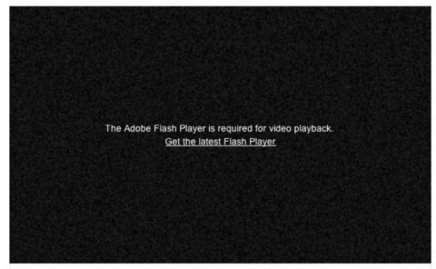

Designer Templates
We've crafted some handsome templates for you to use. Go ahead and continue to layouts to browse through them. You can easily go back to edit your page before publishing. After publishing your page, you can revisit the page generator and switch to another theme. Your Page content will be preserved if it remained markdown format.
What this does
Sometimes YouTube will give you a "please use flash" message as below. However if you view the embed iframe this will play fine. By using this bookmarklet you can just hit that button and it will load the embed version.
